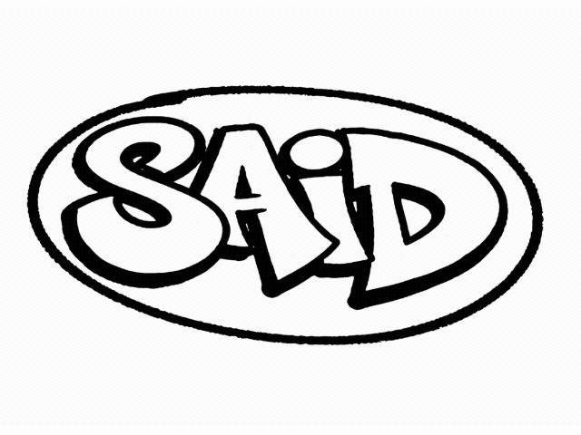

1. GIF animado
GIF animado creado a partir de 8 imágenes generadas con IA, cada una con tipografías diferentes y estilos llamativos.

Proceso de creación:
- Herramienta: Adobe Express
- Imágenes originales: 8 fotos generadas con IA con tipografías diferentes
- Tamaño imágenes: Entre 65 KB y 185 KB cada una (PNG)
- Composición: Imágenes centradas con espaciado uniforme
- Número de fotogramas: 8
- Duración por fotograma: 0.2 segundos
- Duración total: 1.6 segundos (8 × 0.2s)
- Peso final del GIF: 266.44 KB
2. Animación hover con CSS
Diseña un botón con una animación suave al pasar el ratón (cambios de color, tamaño, posición, etc.).
3. Animación continua con @keyframes
Crea una animación continua (por ejemplo un icono que late o una burbuja
que se desplaza) usando la propiedad animation.
⚡
↓
Animaciones: burbujita con efecto pulso, icono con rotación y scroll indicator con rebote.
4. Comparativa GIF vs CSS
¿Cuándo usar GIF animado?
- Animaciones complejas con muchos colores o fotografías
- Cuando necesitas compatibilidad universal (funciona en cualquier navegador)
- Para contenido que no requiere interactividad
- Memes, reacciones o animaciones prediseñadas
¿Cuándo usar animación CSS?
- Animaciones de interfaz (botones, transiciones, hover effects)
- Cuando necesitas control programático (pausar, revertir, modificar)
- Para mejor rendimiento y menor consumo de recursos
- Animaciones que deben ser responsivas y escalables
Diferencias clave:
- Control: CSS permite interactividad y modificación en tiempo real; GIF es estático
- Rendimiento: CSS usa la GPU y es más eficiente; GIF puede ser pesado
- Accesibilidad: CSS permite respetar prefers-reduced-motion; GIF no se puede pausar fácilmente
- Calidad: CSS es vectorial y escalable; GIF tiene paleta limitada (256 colores)